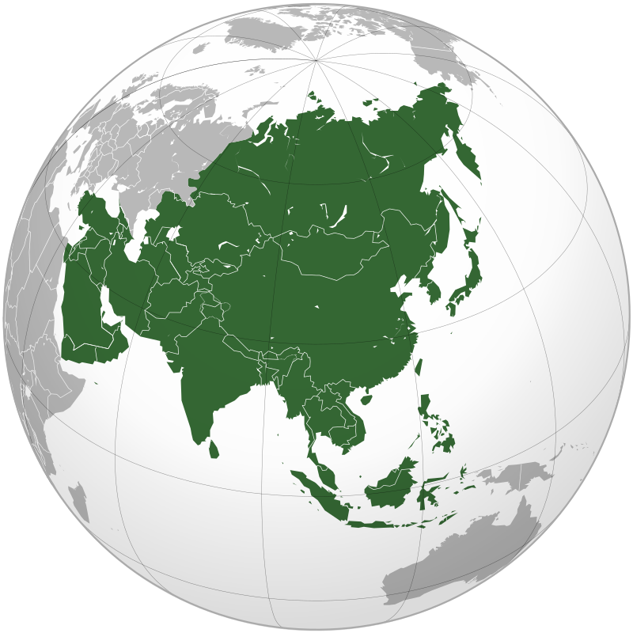
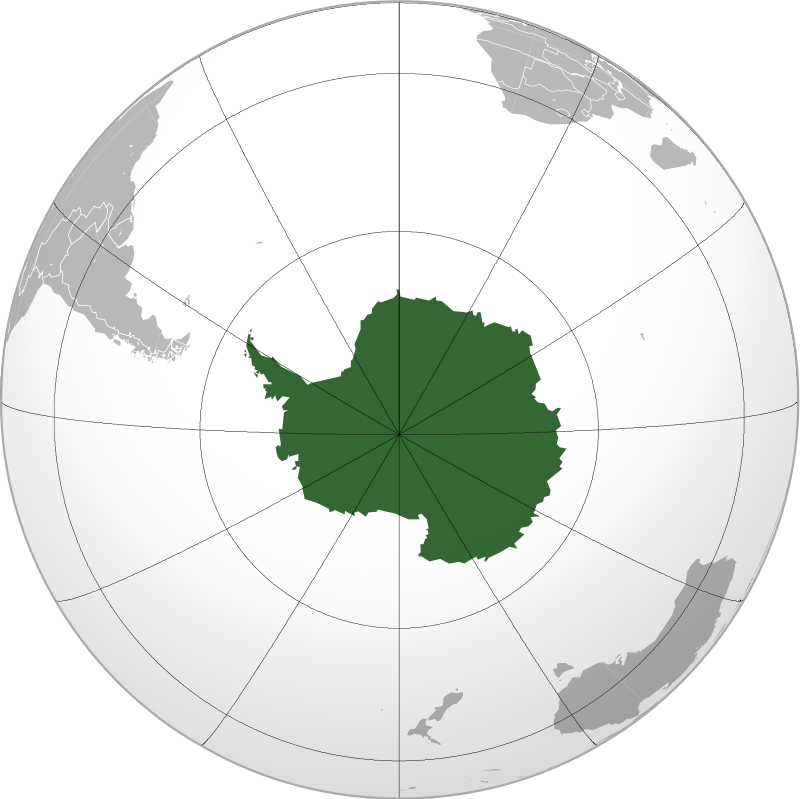
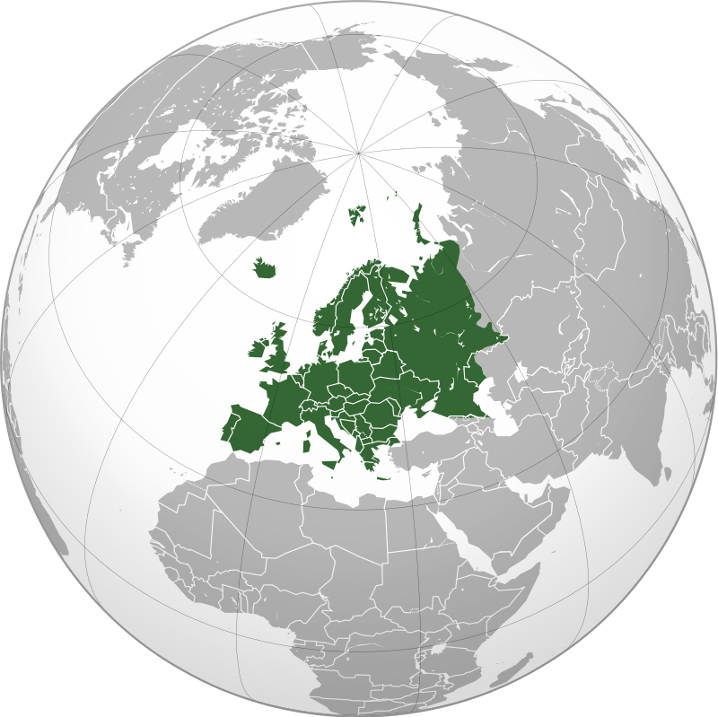

asia
Asia is bounded on the east by the Pacific Ocean, on the south by the Indian Ocean, and on the north by the Arctic Ocean. The border of Asia with Europe is a historical and cultural construct, as there is no clear physical and geographical separation between them. It is somewhat arbitrary and has moved since its first conception in classical antiquity. The division of Eurasia into two continents reflects East–West cultural, linguistic, and ethnic differences, some of which vary on a spectrum rather than with a sharp dividing line. A commonly accepted division places Asia to the east of the Suez Canal separating it from Africa and to the east of the Turkish Straits, the Ural Mountains and Ural River, and to the south of the Caucasus Mountains and the Caspian and Black Seas, separating it from Europe
africa

Africa is the world's second-largest and second-most populous continent, after Asia in both cases. At about 30.3 million km2 including adjacent islands, it covers 6% of Earth's total surface area and 20% of its land area. With 1.4 billion people as of 2021, it accounts for about 18% of the world's human population. Africa's population is the youngest amongst all the continents; the median age in 2012 was 19.7, when the worldwide median age was 30.4. Despite a wide range of natural resources.
arctic

The Arctic region is a unique area among Earth's ecosystems. The cultures in the region and the Arctic indigenous peoples have adapted to its cold and extreme conditions. Life in the Arctic includes zooplankton and phytoplankton, fish and marine mammals, birds, land animals, plants and human societies. Arctic land is bordered by the subarctic. The word Arctic comes from the Greek word arktikos, "near the Bear, northern" and from the word (arktos), meaning bear. The name refers either to the constellation Ursa Major, the "Great Bear", which is prominent in the northern portion of the celestial sphere, or to the constellation Ursa Minor, the "Little Bear", which contains the celestial north pole (currently very near Polaris, the current north Pole Star, or North Star)
america

The Americas, which are sometimes collectively called America, are a landmass comprising the totality of North and South America. The Americas make up most of the land in Earth's Western Hemisphere and comprise the New World. Along with their associated islands, the Americas cover 8% of Earth's total surface area and 28.4% of its land area. The topography is dominated by the American Cordillera, a long chain of mountains that runs the length of the west coast. The flatter eastern side of the Americas is dominated by large river basins, such as the Amazon, St. Lawrence River–Great Lakes basin, Mississippi, and La Plata. Since the Americas extend 14,000 km from north to south, the climate and ecology vary widely, from the arctic tundra of Northern Canada, Greenland, and Alaska, to the tropical rain forests in Central America and South America.
antarcitica
Antarctica, the southernmost continent and site of the South Pole, is a virtually uninhabited, ice-covered landmass. Most cruises to the continent visit the Antarctic Peninsula, which stretches toward South America. It’s known for the Lemaire Channel and Paradise Harbor, striking, iceberg-flanked passageways, and Port Lockroy, a former British research station turned museum. The peninsula’s isolated terrain also shelters rich wildlife, including many penguins.
australia

Australia, officially the Commonwealth of Australia, is a sovereign country comprising the mainland of the Australian continent, the island of Tasmania, and numerous smaller islands. With an area of 7,617,930 square kilometres. Australia is the largest country by area in Oceania and the world's sixth-largest country. Australia is the oldest, flattest and driest inhabited continent, with the least fertile soils. It is a megadiverse country, and its size gives it a wide variety of landscapes and climates, with deserts in the centre, tropical rainforests in the north-east, and mountain ranges in the south-east.
europe
Europe is a landmass, which is either considered a continent in its own right or a subcontinent of Eurasia, located entirely in the Northern Hemisphere and mostly in the Eastern Hemisphere. Comprising the westernmost peninsulas of Eurasia, it shares the continental landmass of Afro-Eurasia with both Asia and Africa.